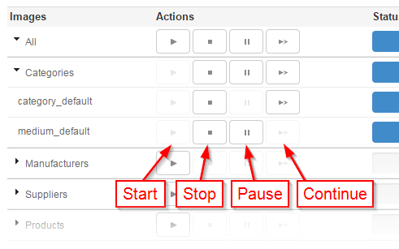

"Advanced images regeneration" is a module which allows to regenerate thumbnail images if the method of PrestaShop does not work.
Using AJAX, this module does not overload the server asks to recalculate all the images at the same time. In this case, this module calculates one by one.
This is the simplest method, but it may not work in some cases. If this does not work, use the manual installation method presented below.
In the Modules tab, click to add a new module.
Click Browse to open a dialog box that allows you to search in your computer, select the file and confirm the dialog box. Finally, click Download this module.
The module will appear in your list of modules in the Module tab.
Click the Install button to install the module.
Use this method if the manual installation does not work. It may seem tedious, a priori, for beginners, because it requires some knowledge of FTP, etc., but it is no more complex and perhaps more convenient because it works every time.
In addition, the expertise required for installation is pretty basic and it is something that all store managers must master.
To manually install a new PrestaShop module:

To regenerate all the images of a category use the buttons in front of its name in the same way.
The module creates temporary files during a regeneration. Indicate here the folder where these files can be created.
If you modify this value while a regeneration is begun, the progress of this one will be lost.
When you throw the regeneration of several image types at the same time, the module can ask the server to handle several demands at the same time. This allows to accelerate the regeneration but can overload the server.
If you notice errors 500 during a regeneration, you can try to decrease this value.
The module can handle one or several images in every request. A higher value allows to accelerate the global regeneration but slowed down the processing time of each request.
If you notice errors 500 or timeout during a regeneration, you can try to decrease this value.
You can define this value for every type of image, so a small image sets less time to handle that a big one, thus you can ask the server to handle more at the same time.